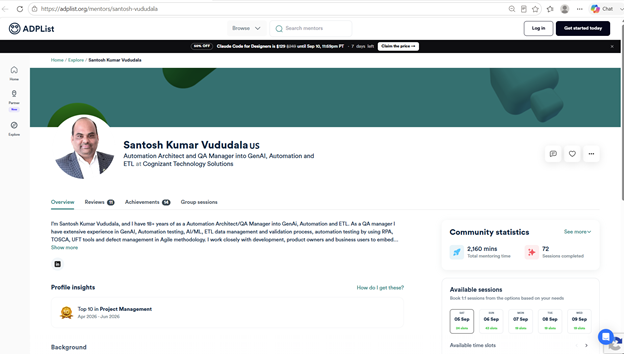
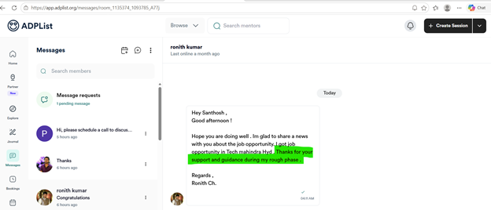
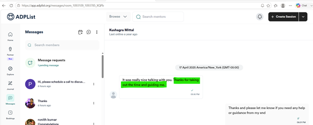
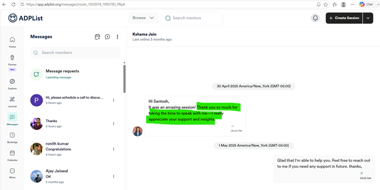
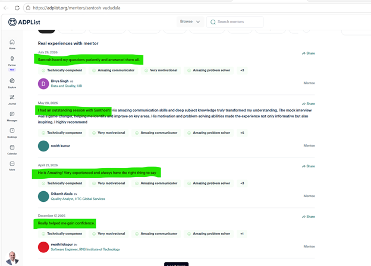
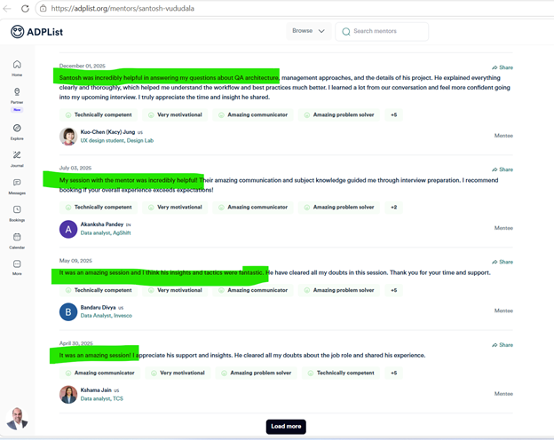

Mentoring & Coaching
Developing technology professionals through structured coaching, practical guidance and international mentoring
Building Technical Capability Across the IT Profession
Throughout my 18+ years in information technology, I have consistently supported the development of technology professionals. Through Centers of Excellence, project teams and independent mentoring, I have helped develop 120+ IT professionals across software testing, automation, RPA, ETL, AI, GenAI and quality engineering.
Develop Independent Technical Capability
My objective has been to develop sustainable capability rather than provide only task-based assistance. I focus on helping professionals understand the underlying technical approach, solve practical problems, improve their decision-making and become more independent in their roles, including professionals transitioning into automation and emerging AI technologies.
Structured Coaching and International Mentoring
Centers of Excellence
I provided structured technical guidance and knowledge sharing to 120+ professionals, using real project experience to explain automation frameworks, testing strategies, ETL validation and emerging technologies.
ADPList One-to-One Mentoring
I extended this contribution through ADPList, providing individual guidance in automation, ETL, AI-driven testing, quality engineering and technology careers. My profile records 72 mentoring bookings, 2,160 mentoring minutes and professionals from 8 countries.

Open ADPList Profile Evidence →Professional Knowledge Sharing
Through IEEE Computer Society activities, I have shared practical experience in AI, automation and quality engineering through technical sessions including The Future of Claims Management with AI and Automation and Revolutionizing Automation with AI-Driven Intelligence.
Academic Peer Review
I have completed 156+ Web of Science-verified peer reviews, including IEEE conferences and journals and Q1 journals, providing constructive feedback on research quality, methodology, relevance, clarity and presentation.
Measured Reach and Professional Development
My mentoring and coaching have expanded technical capability across testing, automation, data engineering and emerging AI technologies. ADPList has extended this contribution internationally, with repeated recognition including Top 10 Mentor, Top 100 Mentor, Top 50 Mentor and Top 1% Mentor. My academic peer-review activity further contributes to the development and quality of professional knowledge.
Mentee Feedback and Professional Outcomes
Direct feedback from mentees provides additional evidence of the practical impact of my mentoring. The comments below describe support during career transitions, interview preparation, technical problem-solving, improved understanding and increased confidence.

Career Support and Guidance
Feedback highlights appreciation for support and guidance during a career transition and a new technology opportunity.
View Feedback Evidence 02 →
Time and Guidance
The mentee specifically thanked me for taking the time to speak and provide guidance.
View Feedback Evidence 03 →
Support and Insights
The feedback records appreciation for the time, support and practical insights provided during the mentoring discussion.
View Feedback Evidence 04 →
Patient, Practical Coaching
Reviews describe patiently answering questions, strong communication, deep subject knowledge and helpful guidance.
View Feedback Evidence 05 →
Technical and Career Development
Reviews describe help with architecture and management approaches, interview preparation, clearing doubts and sharing practical experience.
View Feedback Evidence 06 →